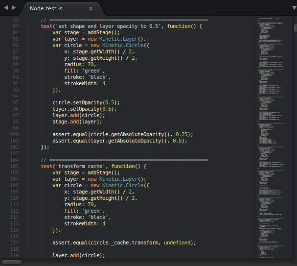

KineticJS is an HTML5 Canvas JavaScript framework that enables high performance animations, transitions, node nesting, layering, filtering, caching, event handling for desktop and mobile applications, and much more.
Features

- Object Oriented API
- Node nesting and event bubbling
- High performance event detection via color map hashing
- Layering support
- Node caching to improve draw performance
- Nodes can be converted into data URLs, image data, or image objects
- Animation support
- Transition support
- Drag and drop with configurable constraints and bounds
- Filters
- Ready to use shapes including rectangles, circles, images, text, lines, polygons, SVG paths, and more
- Custom shapes
- Event driven architecture which enables developers to subscribe to attr change events, layer draw events, and more
- Serialization & de-serialization
- Selector support e.g. stage.get('#foo') and layer.get('.bar');
- Desktop and mobile events
- AMD support
- Pixel ratio optimizations for sharp text and images
- Custom hit regions